x86 CPU寄存器
通用寄存器
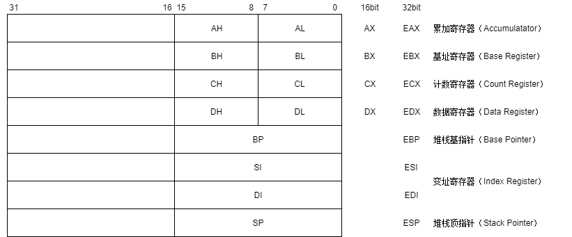
AX是16位寄存器，EAX是32位寄存器，RAX是64位。
通用寄存器可以分为以下三类：
数据寄存器
AX：累加器
BX：暂存一般性数据
另一个特殊功能是 寻址（寻址物理内存地址），BX 寄存器中存放的数据一般是用来作为偏移地址，下面会介绍寻址方式
CX：暂存一般性数据
在位操作中，用CL来指明位移位数
LOOP指令中，通过CX 来指定需要循环的次数
EDX：暂存一般性数据
另一个功能与乘数法指令（DIV, MUL）有关
指针寄存器
EBP, ESP 这两个指针与堆栈有关，下面会介绍
变址寄存器
ESI, EDI 可用于存放算数逻辑运算的操作数或运算结果，或存放存储单元在段内的偏移量
段寄存器
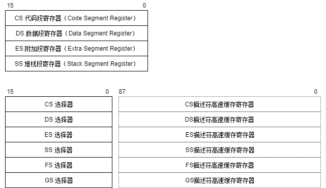
第一个图是8086的段寄存器共有四个，用于存放某个段的基地址。下面的表是80386的寄存器，80386中段寄存器不在存放某个段的基地址，而是段选择符，并且每个段寄存器都对应着一个中存放的不再是某个段的基地址，而是某个段的选择符（Selector）。
具体关系可以看 [段选择符和段描述符的关系][https://www.cnblogs.com/Mr-Shadow/archive/2013/02/03/2890887.html]。
指令指针寄存器
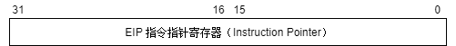
该寄存器存放下一条将要执行指令的偏移量(offset)，该偏移量是相对应目前正在运行的代码段寄存器(CS)，所以下一条指令的地址就是CS+IP。
PS：这个寄存器我们也常叫做程序计数器(PC)，该寄存器无法直接操作。
标志寄存器
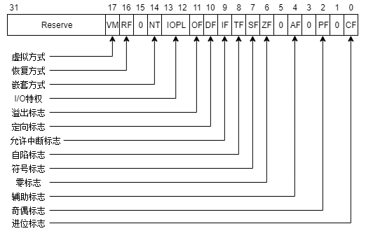
太多标志了，需要具体查看请看 X86系列CPU标准寄存器
系统寄存器
控制寄存器
调试寄存器
基本指令预备知识
前缀
- 寄存器前缀为
% - 立即数前缀为
$ - 十六进制立即数前缀以
0x
后缀
- 8bit
b - 16bit
w - 32bit
l - 64bit
q
1 | movb %bl, %al # 将ebx寄存器的第8位赋值给eax的低8位 |
操作数方向
AT&T语法中，第一操作数是源操作数，第二个操作数是目的操作数；
1 | movl $1, %eax # 将操作数1放入寄存eax中 |
(%ebx) 现在ebx存放的是地址，所以是取ebx存放的地址的值。
寻址方式
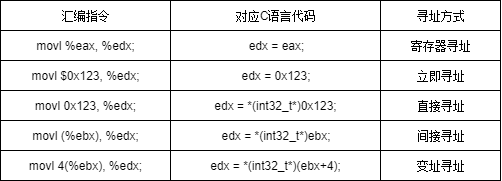
栈概念
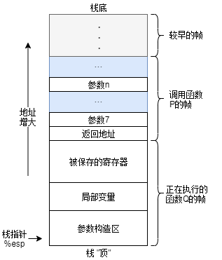
上图是一个栈模型，C语言函数调用机制的一个关键特性在于使用了栈数据结构提供的后进先出的内存管理原则。上图假设函数P调用了函数Q，Q执行后返回到P，这些动作包括下面一个或多个机制：
- 传递控制：在进入函数Q的时候，程序计数器（PC）必须被设置为Q的代码起始地址，然后再返回时，要把程序计数器设置位P中调用Q后面那条指令的地址。
- 传递数据：P必须能够向Q提供一个或多个参数，Q必须能够向P返回一个值。
- 分配和释放内存：在开始时，Q可能需要位局部变量分配空间，而在返回前，又必须释放这些空间。
可以看到图中%rsp指针指向栈顶，我们可以通过pushl、popl指令将数据存入栈或从栈中弹出。
常见指令
mov
| 指令 | 效果 | 描述 |
|---|---|---|
| mov S, D | D ← S | 传递 |
mov指令将第一个操作数（可以是寄存器的内容、内存中的内容或值）复制到第二个操作数（寄存器或内存）。mov不能用于直接从内存复制到内存。mov类指令主要由以下几种形式组成：
| 指令 | 效果 | 描述 |
|---|---|---|
| movb S, D | D ← S | 传递字节 |
| movw S, D | D ← S | 传递字 |
| movl S, D | D ← S | 传递双字 |
| movq S, D | D ← S | 传递四字 |
| movabsq I, R | R ← I | 传递绝对的四字 |
movq只能以表示为32位补码数字的立即数作为源操作数，然后将这个值的符号扩展得到64位的值，放到目的位置。movabsq指令能够以任意64位立即数值作为源操作数，并且只能以寄存器操作为目的。
push & pop
| 指令 | 效果 | 描述 |
|---|---|---|
| pushl S | R[%esp] ← R[%esp]-4 ; M[R[%esp]] ← S | 将双字压入栈 |
| popl D | D ← M[R[%esp]] ; R[%esp] ← R[%esp]+4 | 将双字弹出栈 |
从上面的栈的模型可以看到栈是向下增长的，这样栈顶元素的地址是所有栈中元素地址中最低的。
pushl 将数据压入到栈中，首先先将栈指针-4，然后再将值写道栈顶的地址中。
1
2
3
4pushl %ebp # 等价下面两个指令
subl $4, %esp # %esp先减4
movl %ebp, (%esp) # 将%ebp寄存器的值存放到栈顶popl将栈顶的双字弹出栈，首先先从栈顶读出值，然后再将栈指针+4。
1
2
3
4popl %eax # 等价下面两个指令
movl (%esp), %eax # 将栈顶的值取出
addl $4, %esp # 将%esp加4
但是需要注意，当push与pop指令的参数是esp时，那么不等价。
The POP ESP instruction increments the stack pointer (ESP) before data at the old top of stack is written into the destination.
The PUSH ESP instruction pushes the value of the ESP register as it existed before the instruction was executed. If a PUSH instruction uses a memory operand in which the ESP register is used for computing the operand address, the address of the operand is computed before the ESP register is decremented.
call & ret
| 指令 | 描述 |
|---|---|
| call Lable | 函数调用 |
| call *Operand | 函数调用 |
| ret | 从函数中返回 |
call, ret这两条指令实现子程序（过程、函数等意思）的调用及返回。call指令首先将当前执行指令地址入栈，然后无条件转移到由标签指示的指令。与其它简单的跳转指令不同，call指令保存调用之前的地址信息（当call指令结束后，返回到调用之前的地址）。
ret指令实现子程序的返回机制，ret指令弹出栈中保存的指令地址，然后无条件转移到保存的指令地址执行。
1 | call 0x1234 # 等价于下面两条，知识效果上等价（不可替换） |
1 | ret # 等价于下面，知识效果上等价（不可替换） |
enter & leave
enter 指令为被调用过程自动创建堆栈帧，等价于以下两条指令
1
2pushl %ebp # 将%ebp压栈
movl %esp %ebp # 将%esp保存到%ebp， 这两步是函数的标准开头leave指令结束一个过程的堆栈帧，等价于下面两条指令
1
2movl %ebp, %esp
popl %ebp
其他指令
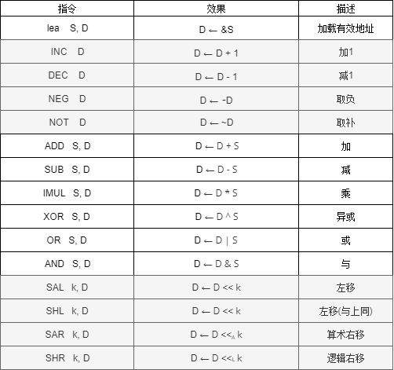
指令只列举了一些而已。
事例程序
下面通过一个程序，来展示程序运行过程中的堆栈变化。
程序的C源码是这样的：
1 | int func1(short c) |
将它编译成32位的汇编
1 | gcc -fno-pie -S -o main.s main.c -m32 |
得到汇编main.s(去掉了一些无关代码)：
1 |
|
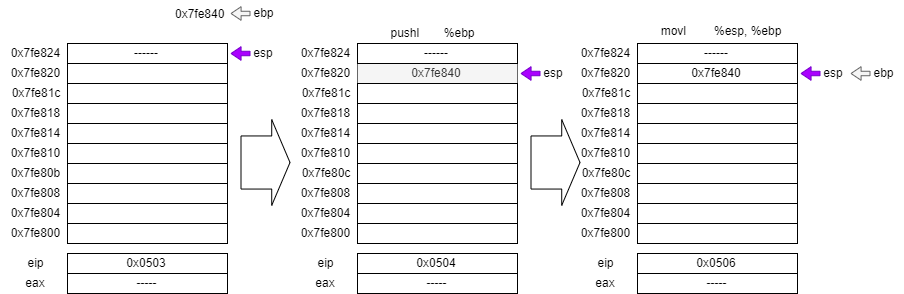
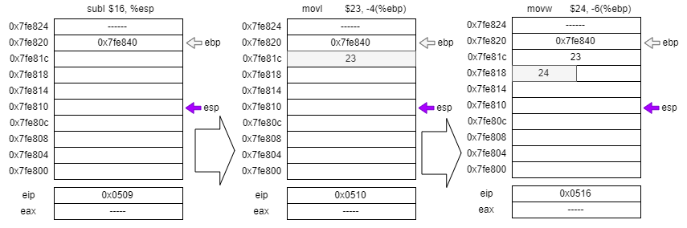
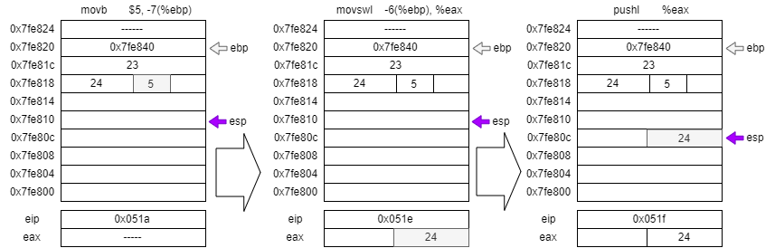
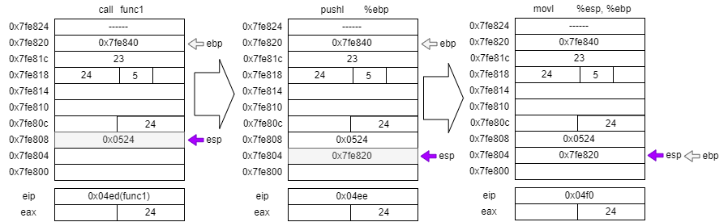
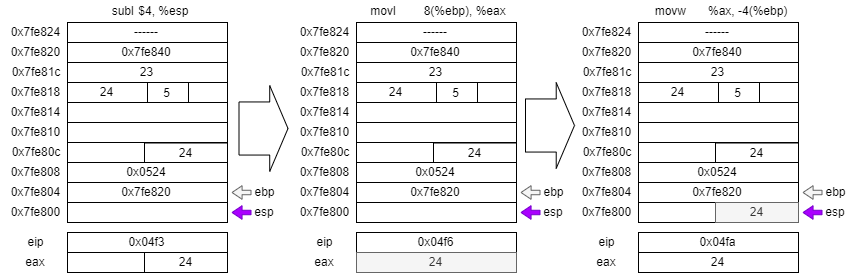
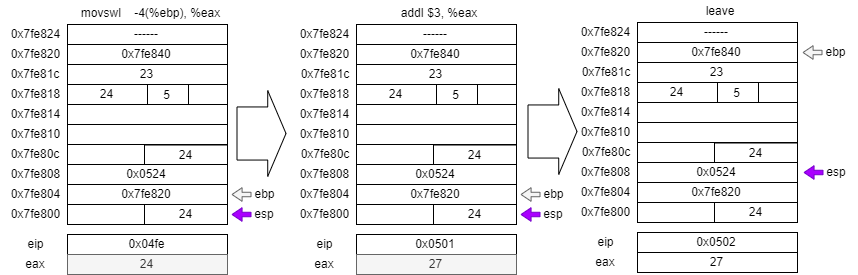
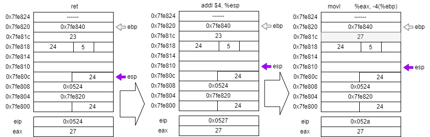
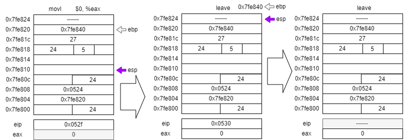
不知道为什么，会有main函数中subl $16, %esp，需要减16？？？